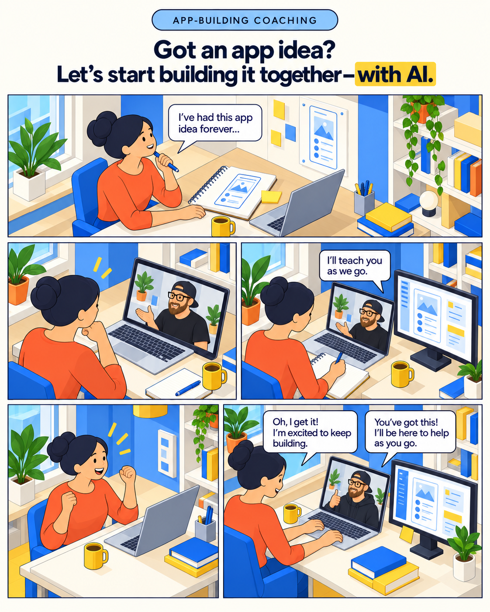

Shape a buildable idea
Turn a broad concept into a clear next step and a small first version.
AI APP-BUILDING COACHING
No coding experience or finished project idea needed. Bring a question, rough goal, or just curiosity; we’ll choose a small first build and I’ll show you how to keep going with AI.
You can start with a question or curiosity. No coding experience or polished plan needed.

HANDS-ON FROM THE START
We’ll find a useful starting point for exploring app building. That could mean shaping a rough idea, mapping a first version, trying an AI-assisted coding workflow, or building a small feature together.
You’ll see how I break down a project, give AI the right context, guide its work, check the result, and recover when it goes sideways. Then you can use that process on the next step.
WHAT YOU’LL PRACTICE
We’ll tailor the work to what interests you and your starting point. These are examples, not a fixed curriculum.
Turn a broad concept into a clear next step and a small first version.
Learn how to explain what you want, guide AI through changes, and check the result without needing every technical detail.
Check what AI produces, spot issues, and get unstuck without starting over.
QUICK ANSWERS
A few details to help you decide if the AI Build Kickstart is right for you.
No. Bring a question, a goal, or just curiosity. We’ll choose a small first build together, and I’ll teach you as you build with AI.
It’s coaching. You’ll make the project decisions and work alongside me. I’ll guide the AI workflow, explain key choices, and help you get unstuck.
We’ll agree on a focused first milestone that fits three hours—often a simple first version or a useful improvement. A larger idea may need more work afterward.
We’ll choose tools that fit the project and your budget. If a paid plan is needed, I’ll discuss it with you before you sign up or pay for anything.
Request a preferred time for free. I’ll confirm it or suggest another. After confirmation, $225 reserves the first session; $222 is due before session two.
You’ll leave with a clear next step and a process you can use on your own. Optional monthly support is available, but there’s no automatic enrollment.
START WITH WHAT YOU’RE CURIOUS ABOUT
In two sessions, we’ll explore app building, make a first start, and show you how to keep building with AI.